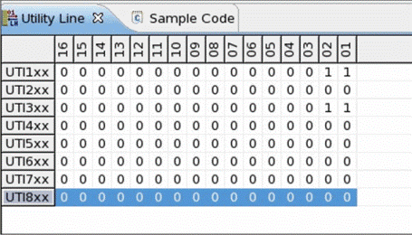

SmartRDI: Utility lines control
SmartRDI provides the class util() to control the utility lines in code‑based mode and in pattern‑based mode.
The following member functions are provided:
In the code‑based mode, the setup will be executed directly.
In the pattern‑based mode, the utility lines are controlled by the pattern. In the sequencer‑controlled utility lines, four serial pins are used to control the utility lines. The control pattern for the four serial pins will be generated. The serial pins need to be specified in the RDI_Configure file as below. The following configuration means utility block 1 and 2 are ganged. Comma is used to align the utility block and the pins to control the utility block.
UTIL_BLOCK = 12,3,4 // or 1-2,3,4 UTIL_FRAM = FR1,FR3,FR4 UTIL_SCLK = SK1,SK3,SK4 UTIL_SINP = SN1,SN3,SN4 UTIL_SOUT = SO1,SO3,SO4
After the code is executed, you can check the relay status in the hardware view.

This may lead to conflicts if the same utility line is controlled by more than one API or tool.
For SmartRDI we therefore strongly recommend, controlling utility lines either by the rdi.route() class or by the rdi.util() class. The mixed use of the two APIs or other test method APIs and tools is not recommended. This recommendation applies to code‑based programming and to pattern‑based programming.
Code‑based programming for the rdi.route() means that the utility lines are set to "static" in the "Control table" of the Utility Lines Control editor. Pattern‑based programming for the rdi.route() means that the utility lines are set to "dynamic" in the "Utility Lines Control editor".
Example
class RDI_STAT_UTIL: public testmethod::TestMethod
{
protected:
string sMode;
STRING_VECTOR utilitylineStatus_1,utilitylineStatus_2,utilitylineStatus_3;
virtual void initialize()
{
addParameter("RDIMode","string",&sMode, testmethod::TM_PARAMETER_INPUT).setOptions("SINGLE:BURST:PROD").setDefault("BURST");
}
virtual void run()
{
RDI_INIT();
ON_FIRST_INVOCATION_BEGIN();
//
// Select smartRDI Mode
//
TA::USER_RUN_MODE mode;
if (sMode == "SINGLE") mode = TA::SINGLE;
else if (sMode == "BURST") mode = TA::BURST;
else if (sMode == "PROD") mode = TA::PROD;
utilitylineStatus_1 = GET_UTILITY_LINES_STATUS(0);
//
// Set 4 util lines of util block 2-9 defined in pin file
//
rdi.util().pin("SEQ_LED_201,SEQ_LED_207, SEQ_LED_209,SEQ_LED_215").setOn().execute();
rdi.wait(2 ms);
utilitylineStatus_2 = GET_UTILITY_LINES_STATUS(0);
//
// Reset 4 util lines of util block 2-9 defined in pin file
//
rdi.util().pin("SEQ_LED_201,SEQ_LED_207,SEQ_LED_209,SEQ_LED_215").setOff().execute();
rdi.wait(4 ms);
utilitylineStatus_3 = GET_UTILITY_LINES_STATUS(0);
ON_FIRST_INVOCATION_END();
//
// Datalog
//
cout << "after reset" << endl;
for(int i=1; i<9;i++)
{
cout << "STAT_UTIL" << i << " = " << utilitylineStatus_1[i-1] << endl;
}
cout << "after set on" << endl;
for(int i=1; i<9;i++)
{
cout << "STAT_UTIL" << i << " = " << utilitylineStatus_2[i-1] << endl;
}
cout << "after set off" << endl;
for(int i=1; i<9;i++)
{
cout << "STAT_UTIL" << i << " = " << utilitylineStatus_3[i-1] << endl;
}
return;
}
virtual void postParameterChange(const string& parameterIdentifier)
{
return;
}
virtual const string getComment() const
{
string comment = "please add your comment for this method.";
return comment;
}
};
Functional changes
- Introduced in SmartRDI 2.1.0